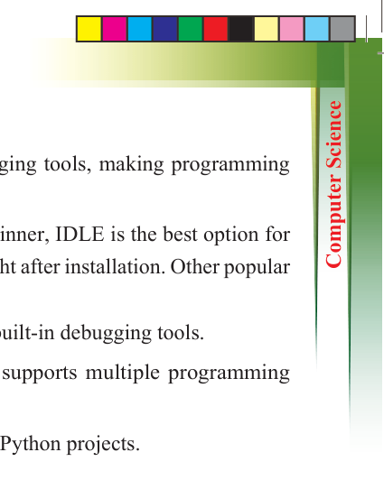
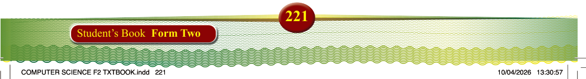
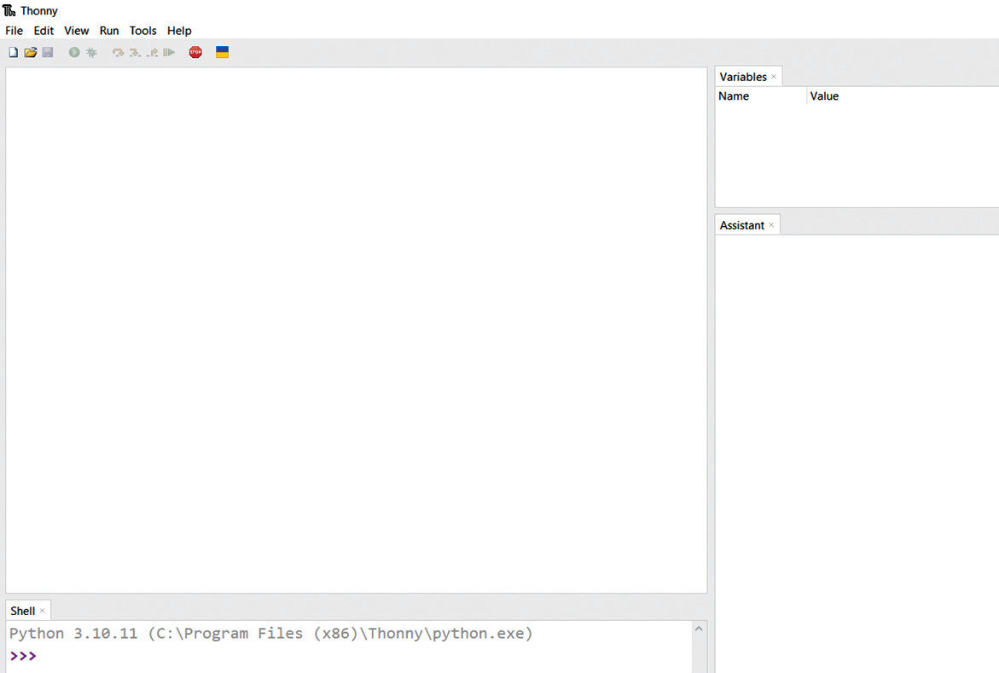

syntax highlighting, auto-completion, and debugging tools, making programming
easier.
To make the process as easy as possible for a beginner, IDLE is the best option for
you. It is included with Python and ready to use right after installation. Other popular
Python IDEs include:
(a) Thonny – Beginner-friendly, comes with built-in debugging tools.
(b) VS Code – Popular among developers, supports multiple programming languages with extensions.
(c) PyCharm – Advanced IDE for large-scale Python projects.
Steps to set up Python Development Environment on Thonny IDE
Thonny is a simple and beginner-friendly IDE for Python programming. Follow these
steps to install and set it up:
Step 1: Download and Install Thonny from https://thonny.org.
Step 2: Open Thonny from the Start Menu (Windows) or Applications (macOS/
Linux), its interface should as shown in Figure 5.2.

Figure 5.2: An interface of Thonny IDE
Step 3: Prepare to write your first Python program